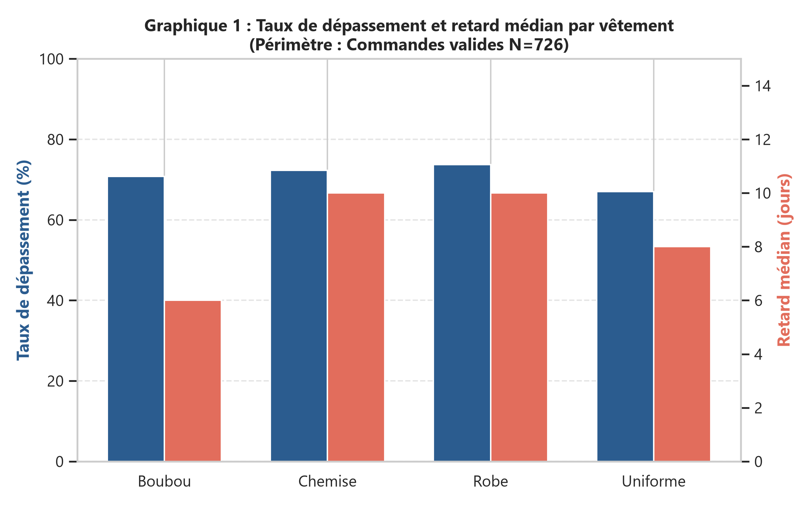
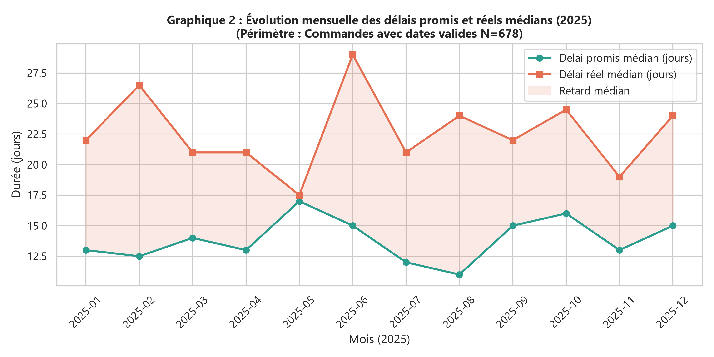
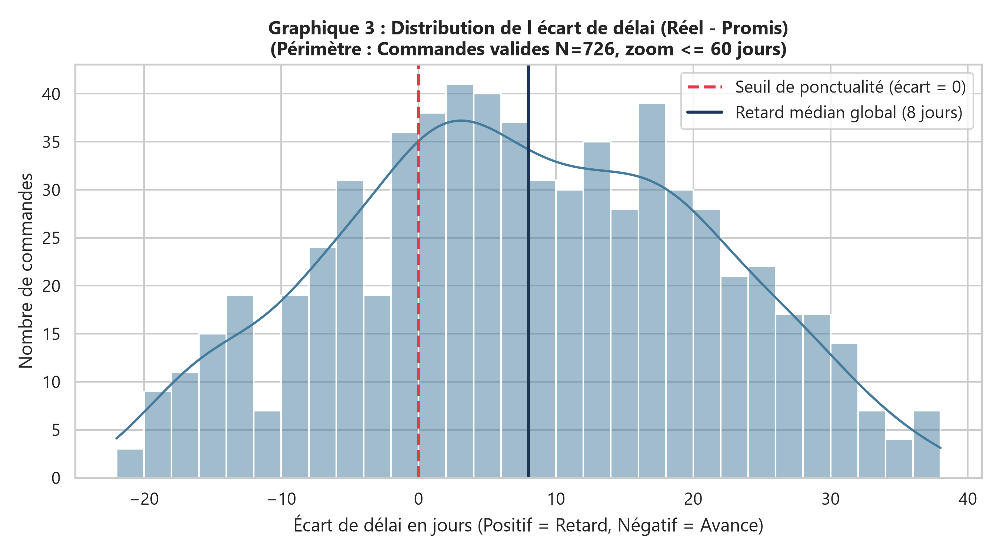
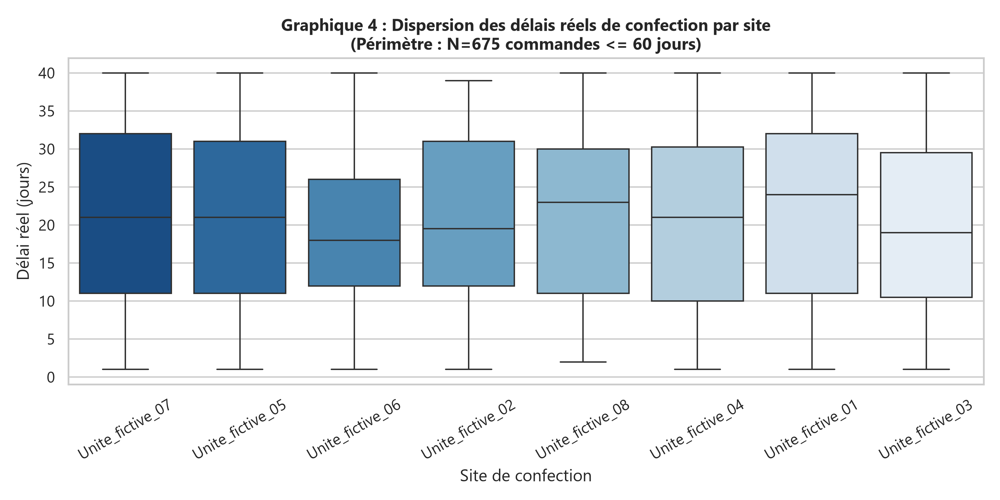
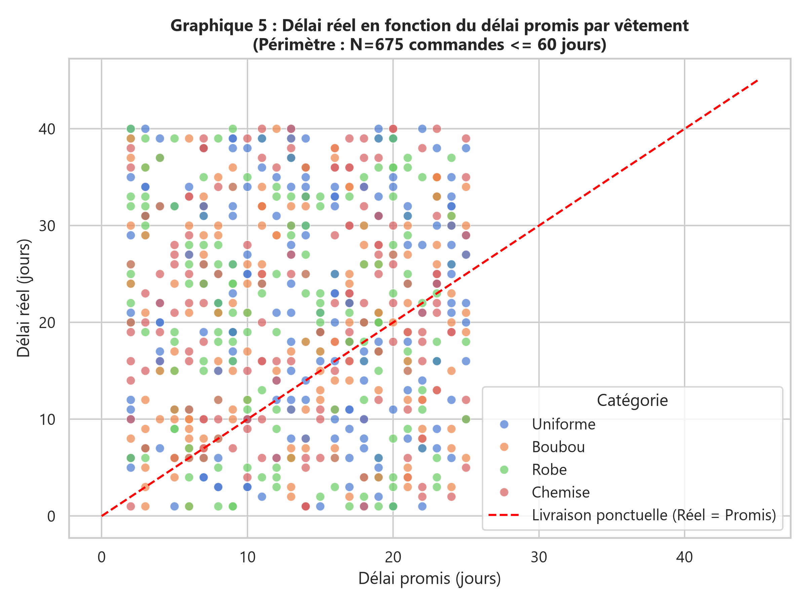

Une structure entièrement fictive implantée dans plusieurs villes du Sénégal vous confie son registre de ateliers de couture. Les équipes ont consolidé des saisies manuelles et des exports provenant de plusieurs postes. La direction constate que les totaux ne concordent pas et ne sait pas encore quels indicateurs utiliser. Elle vous recrute comme analyste pour transformer ces exports en résultats vérifiables. Une ligne représente une commande de confection. Plusieurs opérations peuvent avoir lieu le même jour dans un même site. Les villes servent uniquement de contexte : ces données ne mesurent aucune situation réelle au Sénégal.
Votre réponse finale doit traiter cette question centrale : Pour quels vêtements les commandes dépassent-elles le plus souvent le délai promis ?
À l'issue du projet, vous devrez être capable de :
- importer une source JSON sans perdre silencieusement des enregistrements ;
- construire un audit chiffré de qualité et justifier chaque règle de nettoyage ;
- expliquer et calculer les indicateurs adaptés à une commande de confection, en particulier delai_reel_jours − delai_promis_jours ;
- produire une comparaison temporelle et une comparaison entre sites sans confondre volumes et performances ;
- publier un tableau de bord Dash filtrable et conserver une piste d'audit reproductible.
Ouvrez DICTIONNAIRE_DONNEES.md avant de coder. donnees/operations_sales.csv contient 1 100 lignes physiques et 8 colonnes. donnees/referentiel_sites.csv contient les 8 sites autorisés. Le registre concerne l'année 2025. Les identifiants sont fictifs. Aucune donnée personnelle réelle n'est utilisée.
Source à traiter en priorité : JSON. Utilisez le fichier source_prioritaire correspondant dans donnees/. Le CSV contient les mêmes enregistrements et sert de secours ou de contrôle, pas de lot supplémentaire à concaténer.
Les données sont volontairement très sales. Les anomalies concernent notamment les absences, les formats, les clés, les domaines et les doublons. Certaines valeurs surprenantes peuvent être valides. Le dictionnaire décrit les conventions attendues, sans donner la position des erreurs.
delai_reel_jours > delai_promis_jours), couplé au retard médian en jours.delai_promis_jours), le délai effectif (delai_reel_jours) et le type de pièce de confection (categorie).
id_operation, normalisée sous la forme P06-NNNNN (identifiant texte conservant les zéros initiaux).id_site pointant vers referentiel_sites.csv).operations. Pour HTML, utilisez BeautifulSoup et la table operations. Pour SQLite, ouvrez la table operations avec sqlite3. Aucun accès Internet n'est nécessaire.donnees/source_prioritaire.jsonjson.load() et extraction de la liste sous la clé operations.id_operation, date_operation, id_site, categorie, delai_promis_jours, delai_reel_jours, statut, commentaire.| id_operation | date_operation | id_site | categorie | delai_promis_jours | delai_reel_jours | statut | commentaire |
|---|---|---|---|---|---|---|---|
| P06-00932 | 31/02/2025 | S07 | Uniforme | 19 | 40 | Valide | RAS |
| P06-00959 | 27/05/2025 | S05 | Boubou | 18 | 1 | Valide | RAS |
| P06-00515 | 2025-10-25 | S06 | Boubou | 13 | 34 | Valide | RAS |
| P06-00606 | 2025-08-23 | S02 | Chemise | 12 | 16 | Valide | RAS |
| P06-00841 | 2025-01-30 | S08 | Robe | 16 | 31 | Valide | RAS |
La fonction vérifie la présence exacte de toutes les colonnes requises. Si une ou plusieurs colonnes sont absentes, elle lève immédiatement une exception explicite ValueError pour interrompre l'exécution et empêcher tout calcul silencieux erroné :
def controler_colonnes(df: pd.DataFrame, colonnes_attendues: list) -> bool:
colonnes_presentes = set(df.columns)
manquantes = [col for col in colonnes_attendues if col not in colonnes_presentes]
if manquantes:
raise ValueError(f"Erreur d'intégrité : colonnes obligatoires manquantes -> {manquantes}")
return True
COLONNES_ATTENDUES = [
"id_operation", "date_operation", "id_site", "categorie",
"delai_promis_jours", "delai_reel_jours", "statut", "commentaire"
]
controler_colonnes(df_brut, COLONNES_ATTENDUES) # Retourne TrueInventaire complet sur les 1 100 lignes initiales après détection des marqueurs d'absence ('', ' ', 'NULL', 'N/A', '?', 'inconnu') :
| Colonne | Type lu (Pandas) | Type attendu | Valeurs absentes (marqueurs) | Valeurs distinctes | Observations d'audit |
|---|---|---|---|---|---|
| id_operation | object (str) | texte (P06-NNNNN) | 0 | 1 000 | Présence de 100 identifiants dupliqués |
| date_operation | object (str) | date (YYYY-MM-DD) | 0 (55 dates invalides) | 375 | Formats mixtes (ISO et FR) + 55 fois le "31/02/2025" |
| id_site | object (str) | texte (S01 à S08) | 12 vides | 12 | Espaces, minuscules ('s05') et code inconnu 'S99' |
| categorie | object (str) | texte (4 classes) | 21 | 14 | Espaces (' robe'), casse, 54 'AUTRE_NON_DOCUMENTE' |
| delai_promis_jours | object (str) | numérique (≥ 0) | 18 (+ 52 négatifs) | 68 | Suffixe ' jours' (59 cas), 52 valeurs négatives (-26) |
| delai_reel_jours | object (str) | numérique (≥ 0) | 70 (+ 40 sentinelles) | 107 | 53 'erreur_saisie', 40 sentinelles '999999', valeurs en 1000 |
| statut | object (str) | texte (3 états) | 7 ('INCONNU') | 6 | Variations de casse (' valide ', 'VALIDE') |
| commentaire | object (str) | texte libre | 0 | 2 | 'RAS' (1 060) et 'export secondaire' (40) |
delai_reel_jours et commentaire (ex. l'une porte 'RAS' et l'autre 'export secondaire' avec des valeurs de délai différentes).YYYY-MM-DD (988 observations, ex: 2025-10-25, 2025-08-23) et format français DD/MM/YYYY (112 observations, ex: 27/05/2025, 15/01/2025).31/02/2025 (le mois de février ne comporte jamais 31 jours).delai_promis_jours : présence d'unités concaténées (ex. "18 jours", "7 jours") et de marqueurs textuels (ex. "inconnu", "N/A").delai_reel_jours : libellés d'erreurs (ex. "erreur_saisie") et marqueurs (ex. "?", "NULL")."AUTRE_NON_DOCUMENTE" (54 cas), "inconnu" (3 cas), ainsi que des libellés altérés par la casse ou des espaces parasites (ex. " robe", " chemise").
31/02/2025 ; délais promis négatifs (ex. -26 jours, un délai d'engagement ne peut être négatif) ; sentinelle technique 999999 et libellé "erreur_saisie" dans le délai réel.referentiel_sites.csv (variations de casse 's05': 20, espaces ' S03 ': 14, vides '': 12, code inconnu 'S99': 9).'s05' devient 'S05' et ' S03 ' devient 'S03'. Il ne reste plus que 21 références non appariées (12 codes vides et 9 codes 'S99' hors référentiel).id_site est une clé primaire stricte dans le référentiel des sites (8 sites uniques S01 à S08).
Tableau de qualité initial (dénominateur commun = 1 100 lignes brutes) :
| Règle d'audit contrôlée | Anomalies détectées | Dénominateur | Taux d'anomalie (%) | Impact métier couture |
|---|---|---|---|---|
| Doublons stricts de lignes | 60 copies | 1 100 | 5,45 % | Surévaluation artificielle du volume d'atelier |
| Conflits de clé id_operation | 80 lignes (40 clés) | 1 100 | 7,27 % | Incertitude critique sur le délai réel de confection |
| Dates impossibles (31 février) | 55 lignes | 1 100 | 5,00 % | Impossibilité d'affecter un mois calendaire |
| Codes sites non conformes (bruts) | 55 lignes | 1 100 | 5,00 % | Impossibilité de rattacher à un atelier physique |
| Catégories absentes ou non documentées | 75 lignes | 1 100 | 6,82 % | Classification textile indéterminée |
| Délai promis négatif ou absent | 70 lignes | 1 100 | 6,36 % | Absence de point de repère contractuel |
| Délai réel invalide (texte, sentinelle, absent) | 110 lignes | 1 100 | 10,00 % | Mesure centrale du retard inexploitable |
| Statut non documenté ('INCONNU') | 7 lignes | 1 100 | 0,64 % | Validation incertaine pour l'analyse |
donnees/source_prioritaire.json reste intacte et inchangée.source_row (index de 0 à 1 099) est ajoutée dès le chargement.resultats/journal_nettoyage.csv comportant les 6 colonnes réglementaires : ligne, colonne, valeur_initiale, action, justification, valeur_obtenue (plus de 1 200 actions tracées).
.strip()), mise en majuscule des identifiants et normalisation en titre pour les catégories autorisées (Boubou, Chemise, Robe, Uniforme)."AUTRE_NON_DOCUMENTE") est conservée sous son libellé exact ou marquée NaN. Nous refusons expressément d'appliquer une imputation par le mode (qui gonflerait indûment la catégorie "Robe").
' jours' dans delai_promis_jours et conversion numérique. Les valeurs négatives (< 0) sont rejetées et converties en NaN. Dans delai_reel_jours, le texte "erreur_saisie" et le code sentinelle 999999 sont exclus et convertis en NaN.%Y-%m-%d) et français (%d/%m/%Y) convertis en ISO. Les 55 dates impossibles 31/02/2025 sont converties en NaT pour l'analyse temporelle, tout en conservant la ligne pour les statistiques globales d'atelier.
id_operation : clé primaire, l'imputer créerait des faux doublons.
- date_operation : imputer une date biaiserait artificiellement la saisonnalité de la confection.
- id_site : imputer un atelier fausserait la mesure de performance et la charge de production locale.
- statut : régit l'éligibilité aux indicateurs officiels, ne peut être deviné.operations_nettoyees.csv avec indicateur NaN, et filtrage ciblé uniquement lors du calcul des indicateurs métier (périmètre des commandes valides exploitables).
SUPPRESSION_DOUBLON_STRICT.resultats/quarantaine.csv avec l'explication du conflit. Aucune règle arbitraire (type premier ou dernier arrivé) n'a été appliquée.
delai_reel_jours = 999999 : Rejeté (NaN) car code sentinelle technique absurde représentant ~2 700 ans.delai_promis_jours = -26 : Rejeté (NaN) car un délai promis négatif est logiquement impossible.date_operation = 31/02/2025 : Exclue de la chronologie (NaT) car date calendaire inexistante.delai_reel_jours = 40 (avec promis = 10) : Conservé car retard important mais tout à fait plausible en confection (attente de broderie main ou réapprovisionnement de tissu).delai_reel_jours = 16000 : Conservé dans le registre mais analysé via la médiane ; diviser par 1 000 serait une conjecture non documentée. L'utilisation de la médiane neutralise son impact sans détruire la donnée.
Les trois fichiers ont été générés dans le dossier resultats/. Le principe d'étanchéité et de conservation stricte est vérifié :
Comparaison avant / après nettoyage (fichier resultats/qualite_avant_apres.csv) :
| Problème d'audit | Taux avant (%) | Taux après (%) | Statut de résolution |
|---|---|---|---|
| Doublons stricts | 5,45 % | 0,00 % | Supprimés avec trace au journal |
| Conflits d'identifiants | 7,27 % | 0,00 % | Isolés en quarantaine |
| Dates impossibles (31/02) | 5,00 % | 0,00 % | Exclues de la série temporelle (NaT) |
| Codes sites invalides | 5,00 % | 1,88 % | Casse corrigée ; 18 cas non documentés maintenus sans fausse attribution |
| Délais réels sentinelles/erreurs | 10,00 % | 0,00 % | Rejetés des indicateurs d'atelier |
Valide, atelier reconnu S01-S08, catégorie textile documentée, délais valides), soit un effectif de 726 commandes.| Vêtement (Catégorie) | Commandes analysées | Commandes en retard | Taux de dépassement (%) | Retard médian (jours) | Retard moyen (jours) |
|---|---|---|---|---|---|
| Robe | 190 | 140 | 73,68 % | 10,0 j | 1 506,6 j |
| Chemise | 177 | 128 | 72,32 % | 10,0 j | 1 046,0 j |
| Boubou | 168 | 119 | 70,83 % | 6,0 j | 1 594,0 j |
| Uniforme | 191 | 128 | 67,02 % | 8,0 j | 666,2 j |
Classement des ateliers de couture par volume et niveau de retard (sur 726 commandes valides) :
| Site | Nom de l'atelier | Ville | Volume (commandes) | Taux de retard (%) | Délai promis médian | Délai réel médian | Retard médian (jours) |
|---|---|---|---|---|---|---|---|
| S01 | Unite_fictive_01 | Dakar | 101 | 79,21 % | 13,0 j | 25,0 j | +12,0 j |
| S02 | Unite_fictive_02 | Thiès | 101 | 63,37 % | 14,0 j | 20,0 j | +6,0 j |
| S05 | Unite_fictive_05 | Ziguinchor | 96 | 67,71 % | 15,0 j | 22,0 j | +7,0 j |
| S07 | Unite_fictive_07 | Fatick | 88 | 80,68 % | 13,0 j | 24,0 j | +11,5 j |
| S08 | Unite_fictive_08 | Diourbel | 86 | 72,09 % | 14,0 j | 26,5 j | +12,5 j |
| S06 | Unite_fictive_06 | Louga | 86 | 68,60 % | 13,0 j | 19,5 j | +7,0 j |
| S04 | Unite_fictive_04 | Kaolack | 85 | 69,41 % | 14,0 j | 22,0 j | +9,0 j |
| S03 | Unite_fictive_03 | Saint-Louis | 83 | 66,27 % | 14,0 j | 21,0 j | +7,0 j |
| Mois (2025) | Commandes | Promis médian | Réel médian | Retard médian | Taux de retard (%) |
|---|---|---|---|---|---|
| 2025-01 | 61 | 13,0 j | 23,0 j | +8,0 j | 72,13 % |
| 2025-02 | 46 | 12,5 j | 25,0 j | +10,5 j | 76,09 % |
| 2025-03 | 56 | 14,0 j | 21,5 j | +5,5 j | 60,71 % |
| 2025-04 | 56 | 13,0 j | 22,0 j | +10,0 j | 62,50 % |
| 2025-05 | 52 | 17,0 j | 19,0 j | +2,0 j | 59,62 % (Minimum) |
| 2025-06 | 53 | 15,0 j | 31,0 j | +15,0 j | 73,58 % |
| 2025-07 | 64 | 12,0 j | 22,5 j | +9,0 j | 75,00 % |
| 2025-08 | 55 | 11,0 j | 22,0 j | +11,0 j | 78,18 % (Pic) |
| 2025-09 | 49 | 15,0 j | 22,0 j | +7,0 j | 75,51 % |
| 2025-10 | 60 | 16,0 j | 25,5 j | +7,5 j | 76,67 % |
| 2025-11 | 63 | 13,0 j | 21,0 j | +8,0 j | 66,67 % |
| 2025-12 | 63 | 15,0 j | 22,0 j | +9,0 j | 69,84 % |
Les 5 figures réglementaires ont été générées en haute définition (300 DPI) dans resultats/ :

Graphique 1 : Taux de retard et retard médian par vêtement
Unité : Pourcentage (%) et Jours • Effectif : N = 726 commandes valides.
Interprétation : Les robes dominent le taux de retard à 73,7 %, suivies immédiatement par les chemises à 72,3 %, toutes deux affichant un retard médian de 10 jours. Les uniformes enregistrent la proportion de retards la plus basse (67,0 %). Cette disparité reflète le degré de complexité de montage entre confection sur-mesure et pièces industrielles standardisées.

Graphique 2 : Évolution mensuelle des délais promis et réels médians (2025)
Unité : Durée en jours • Effectif : N = 678 commandes avec dates valides.
Interprétation : Le délai promis médian oscille entre 11 et 17 jours sur l'année 2025. Le délai réel médian est systématiquement supérieur au délai promis, avec un décrochage particulièrement fort en juin (31 jours réels) et en août (retard de 11 jours). Mai 2025 se distingue comme le mois le plus performant avec un retard médian ramené à 2 jours.

Graphique 3 : Distribution de l'écart de délai (delai_reel − delai_promis)
Unité : Jours (positif = retard) • Effectif : N = 726 commandes valides.
Interprétation : La distribution est fortement décalée à droite du seuil de ponctualité zéro, matérialisant un retard généralisé sur l'ensemble de la production. La médiane globale s'établit à +8 jours de retard. Moins de 30 % des confections sont livrées dans les temps impartis.

Graphique 4 : Dispersion des délais réels par atelier de couture
Unité : Jours de confection • Effectif : N = 675 commandes (≤ 60 jours).
Interprétation : Les ateliers de Dakar (S01), Fatick (S07) et Diourbel (S08) présentent les médianes et troisièmes quartiles les plus élevés. Louga (S06) et Thiès (S02) démontrent une plus grande compacité de distribution, gage d'une meilleure régularité. Ces écarts soulignent l'hétérogénéité des contextes d'atelier sans constituer une preuve de sous-performance intrinsèque.

Graphique 5 : Confrontation Délai Promis vs Délai Réel
Unité : Jours • Effectif : N = 675 commandes (≤ 60 jours).
Interprétation : La quasi-totalité des points se situe au-dessus de la droite d'égalité x=y, confirmant visuellement la prédominance du retard. Il n'apparaît pas de corrélation forte entre l'ampleur du délai promis et celle du délai réel. Les dépassements affectent l'ensemble des vêtements sans distinction majeure de catégorie.
app.py disponible à la racine du projet.# 1. Installer les dépendances
pip install -r requirements.txt
# 2. Lancer l'application Dash
python app.py
# 3. Ouvrir votre navigateur sur : http://127.0.0.1:8050/resultats/analyse.sqlite (tables : operations_nettoyees, quarantaine, referentiel_sites).-- 1. Résumé par catégorie de vêtement
SELECT categorie, COUNT(*) as total,
ROUND(AVG(CASE WHEN delai_reel_jours > delai_promis_jours THEN 1.0 ELSE 0.0 END) * 100, 2) as taux_retard_pct
FROM operations_nettoyees
WHERE statut = 'Valide' AND categorie IN ('Boubou', 'Chemise', 'Robe', 'Uniforme')
AND delai_promis_jours IS NOT NULL AND delai_reel_jours IS NOT NULL
GROUP BY categorie ORDER BY taux_retard_pct DESC;
-- 2. Évolution mensuelle
SELECT SUBSTR(date_operation, 1, 7) as mois, COUNT(*) as total,
ROUND(AVG(CASE WHEN delai_reel_jours > delai_promis_jours THEN 1.0 ELSE 0.0 END) * 100, 2) as taux_retard_pct
FROM operations_nettoyees
WHERE statut = 'Valide' AND date_operation IS NOT NULL
GROUP BY SUBSTR(date_operation, 1, 7) ORDER BY mois;
-- 3. Classement des sites
SELECT o.id_site, r.nom_site, r.ville, COUNT(*) as total,
ROUND(AVG(CASE WHEN o.delai_reel_jours > o.delai_promis_jours THEN 1.0 ELSE 0.0 END) * 100, 2) as taux_retard_pct
FROM operations_nettoyees o JOIN referentiel_sites r ON o.id_site = r.id_site
WHERE o.statut = 'Valide'
GROUP BY o.id_site, r.nom_site, r.ville ORDER BY total DESC;resultats/note_de_synthese.md.L'ensemble des livrables requis par le cahier des charges a été rigoureusement constitué et vérifié :
| Livrable | Fichier / Emplacement | Description |
|---|---|---|
| Notebook d'analyse | analyse.ipynb & DEMARRAGE.ipynb | Notebook complet, exécutable de bout en bout avec les 28 réponses numérotées |
| Application Dash | app.py | Tableau de bord filtrable (Dates, Site, Catégorie), 4 graphiques interactifs |
| Données assainies | resultats/operations_nettoyees.csv | 960 commandes nettoyées avec traçabilité d'origine |
| Lot Quarantaine | resultats/quarantaine.csv | 80 enregistrements (40 paires contradictoires) isolés |
| Piste d'audit | resultats/journal_nettoyage.csv | Piste d'audit exhaustive (ligne, colonne, action, justification) |
| Tableau Qualité | resultats/qualite_avant_apres.csv | Mesure avant/après des taux d'anomalies |
| Base de données | resultats/analyse.sqlite | Base SQLite avec 3 requêtes de contrôle conformes à Pandas |
| Exports d'analyse | resultats/synthese_categorie.csvresultats/evolution_mensuelle.csvresultats/classement_sites.csv | Trois tableaux de synthèse statistique |
| Graphiques HD | resultats/graphique[1-5]*.png | 5 figures réglementaires 300 DPI |
| Note de synthèse | resultats/note_de_synthese.md | Note exécutive de deux pages pour la direction générale |
| Journal des décisions | resultats/journal_des_decisions.md | Journal méthodologique des choix d'assainissement |
| Dépendances | requirements.txt | Liste des packages Python nécessaires |